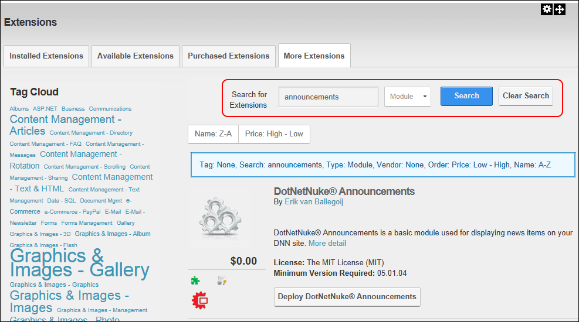
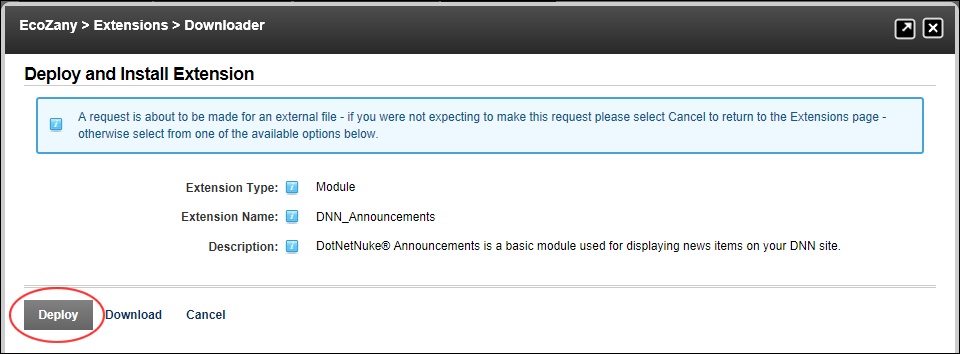
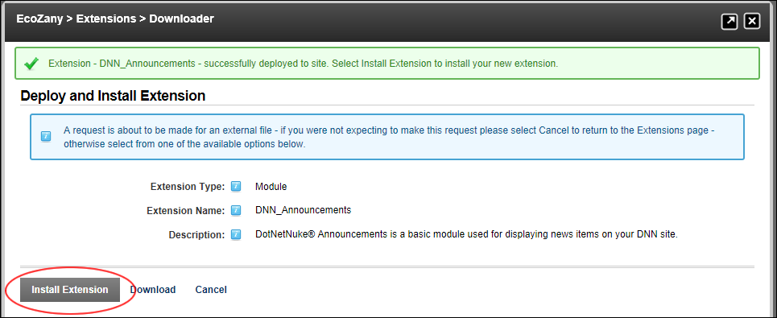

Deploying and Installing More Extensions
How to obtain additional extensions for use in your DNN installation through DNN Store. DNN Store has a vast range of commercial extensions to meet your business needs as well as the free open source DotNetNuke Project modules that are maintained by active DNN community member and detailed in the companion DotNetNuke Project Modules manuals that can be downloaded from http://www.dnnsoftware.com/Community/Download/Manuals.
To ensure the extensions you have or will purchase are suitable for your DNN solution, the DNN Releases Extension Verification Service provides quick and easy testing for software developers while enabling purchasers to verify that extensions will run seamlessly with DotNetNuke. For more details on this service, view the DNN Extensions Verification Service press release.
- Navigate to Host >
 Extensions and then select the More Extensions tab - OR - Select Modules > Find More Modules from the ControlBar.
Extensions and then select the More Extensions tab - OR - Select Modules > Find More Modules from the ControlBar.
- In the Search for Extensions text box, enter the extension name or a keyword for the extension. For Example, Announcements or DotNetNuke Announcements.
- Optional. At Type, select the type of extension you are searching for. E.g. Module, Skin, All.
- Click the Search button - OR - Strike the Enter key. Tip: An alternative to searching for an extension, as detailed below at Steps 2-4 is to click on a Tag in the Tag Cloud section.
- Results for your search are now displayed in the Extensions list to the right.

- Locate the required extension. Note: If you are searching for a free DotNetNuke Project Module, click the Price: Low - High link to view free modules at the top of the list as has been done in the above image.
- Select from these options:
- Click the Buy [Extension Name] button for extensions which require payments. This will transfer you to the DotNetNuke Store (http://store.dnnsoftware.com/) where you can complete this purchase. Once you are finished you can return to your DNN site and deploy the extension. See "Fetching List of Purchased Extensions"
- Click the Deploy [Extension Name] button to deploy free extensions.
- Click the Deploy link to deploy this extension to your site. Note: You can also click the Download link to download the extension to your site for further use.

- Click the Cancel button if you don't want to install this extension at this time. This adds the extension to the Available Extensions tab where it can be installed at a later time - OR - Click the Install Extension link to install now and continue this tutorial

- On the Release Notes page, review the release notes and then click the Next button.
- On the Review License page:
- At License, review the license for this extension.
- At Accept License?to agree to the license terms.
- Click the Next button.
- On the Package Installation Report page, review the package installation results and then click the Return link.
- On the Package Information page, review the package information and then click the Next button.